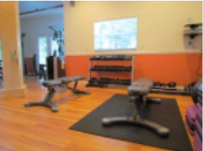

Weights
Our facility includes a weight trainning area with several weight options. Build lean muscle with weight and improve your core with weight trainning.
- Dumbells
- Kettle bells
- Barbells
Our facility includes a weight trainning area with several weight options. Build lean muscle with weight and improve your core with weight trainning.
Burn fat through cardio workouts. If you need to lose 20 Ibs or more, include at least 30 minutes of cardio each day. We have several equipment choices for your workout.
Our certified personal trainers work with you one on one to help you obtain your fitness goals. Our personal trainers keep you motivated you motivated and push you farther than you would push yourself. When you feel like you cannot do one more rep, they tell you that you can. Personal trainning has many benefits.
The following are comom exercise that we engcourage our clients to do as part of their daily exercise routine.